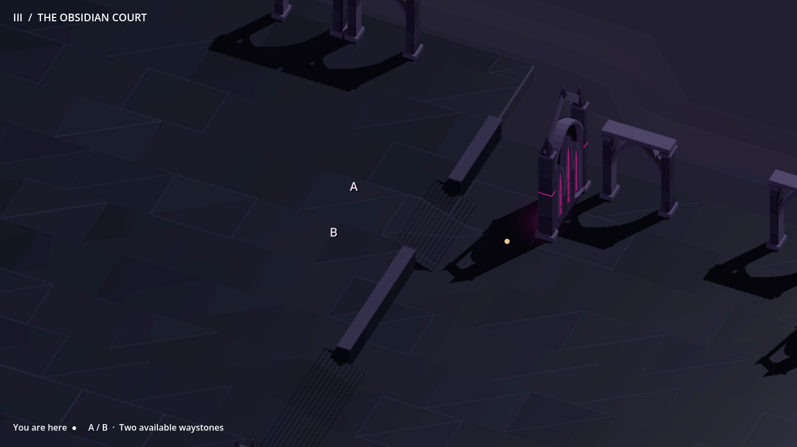
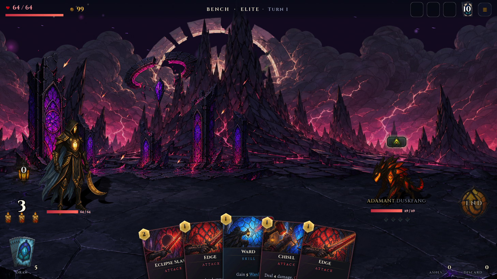
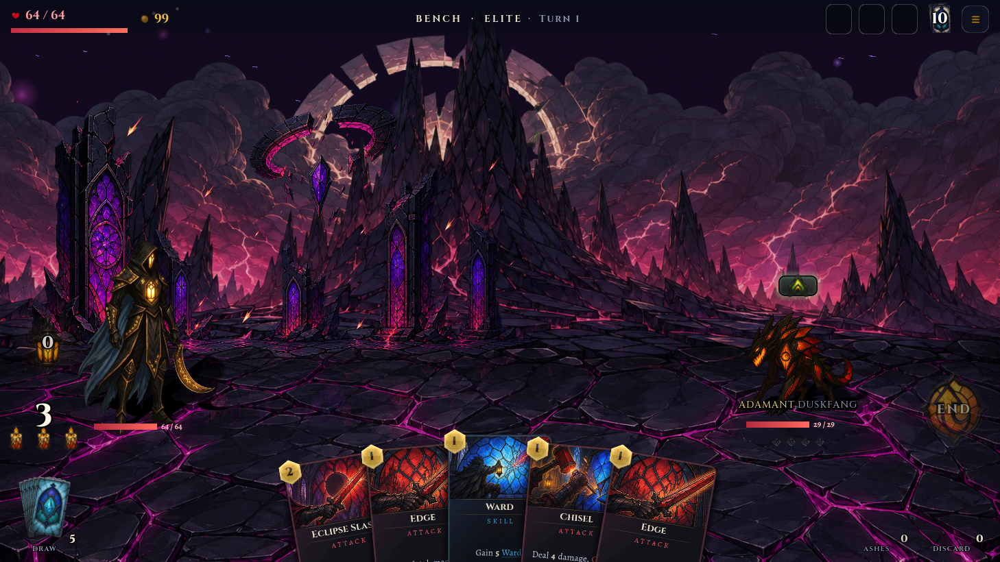

GLASSVOW · ACT III · DIRECTION STUDIES
Reading the Court
Architecture carries the journey. Light appears when a decision needs clarity. These native previews show the same generated fork in four states, followed by a ground-only combat comparison.
One place, three levels of information
Arrive without a permanent road. Preview either next waystone to reveal its actual approach through the stairs. Pull back to read the full network.

Gold marks your position. A and B are the two available next waystones. Letter labels isolate the direction study; final encounter icons are not being redesigned here.
The same stone, in combat
The proposed floor uses larger, quieter obsidian slabs with restrained cool edges. The characters, hand, camera and distant scenery stay in place. The remaining magenta in the background is deliberately visible so the ground change can be judged on its own.

Switch between the two captures of the same frozen combat scene. Only the ground plate changes.
Side-by-side combat comparison

ExistingProposedStudy scope and evidence
These are native rendered state studies, not an interactive gameplay implementation. The overview is an information overlay; the close route is depth-tested world geometry. The 76 generated edges and game snapshot remain unchanged. The candidate ground is a generated painted plate with a preview-only original-alpha/black-background mask; a shared production material and final asset export follow the direction decision. No campaign art has been replaced. Phone proportions are desktop captures, not physical-device qualification.
Capture/source record · Ground candidate plate · Approved-for-review precinct study